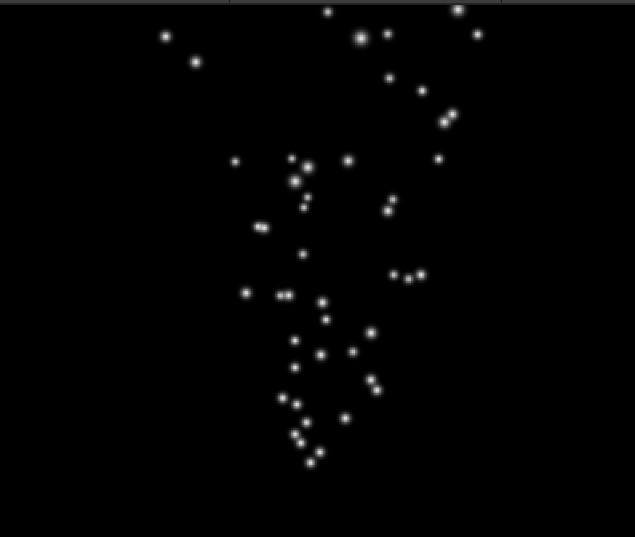

「パーティクル (Particle)」は細かい粒を画面上に一度に大量に撒き散らすという機能です。
パーティクルを使うと煙、炎、雷、液体などのエフェクトを表現できるようになります。
演習を行う前に準備をしましょう。
アセットフォルダの Scenes フォルダの中にシーンを新規作成し、シーン名を「Particle Scene」にする。背景色は任意で構わない
新規作成したシーンへ移動する
ヒエラルキー右クリック → Effects → Particle でパーティクルを新規作成し、名前を「Particle」、Position を (0,0,20)にする
これだけで図1 の様な画面が表示されます。
図1. パーティクル

パーティクルは放出方向や色などを変えることで様々な効果を表すことが出来ます。
ただ設定項目が多すぎて、全ての項目について扱うとそれだけでテキスト一冊分になってしまうので、今回は基本的な設定だけ取り扱います。
では以下の手順でパーティクルの放出方向、色、スピード、ライフタイム、大きさ、重力の影響を変更してみましょう。
ヒエラルキーの「Particle」をクリックしてインスペクタを表示する
放出方向を変えるには Rotation を変える(ジンバルロックに注意)。例えば (0, 90, 0)にすると横に粒子を放出する
色を変えるには Particle → Start Color を変える。例えば RGBA = (255,255,0,255)にすると黄色になる。
スピードを変えるには Particle → Start Speed を変える。例えば 2 にすると遅くなる。
ライフタイム(消えるまでの時間)を変えるには Particle → Start Lifetime を変える。例えば 10 にすると長くなる
大きさを変えるには Particle → Start Size を変える。例えば 5 にすると大きくなる
重力の影響を変えるには Particle → Gravity Modifier を変える。例えば 0.05 にすると下に落ちる
上の編集をすると図2の様な画面になります。
他にも様々な設定がありますし、もちろんプレハブ化して使うことも出来ますので、色々試して下さい。
図2. パーティクルの設定